야외 봉사 보고, 파이오니아 시간, 구역 관리 및 성경 읽기
여호와의 증인을 위한 무료·완전 비공개 iPhone 및 iPad 앱: 위젯 지원 타이머, 월별 보고, 파이오니아 달력, 구역 카드, 재방문, 성서 연구, 영적 습관 및 66권 성경 읽기 계획표.
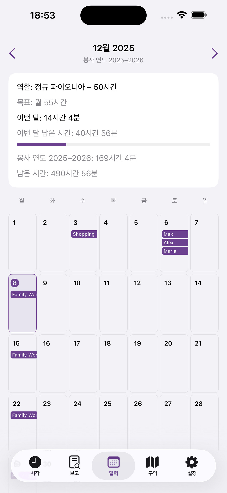
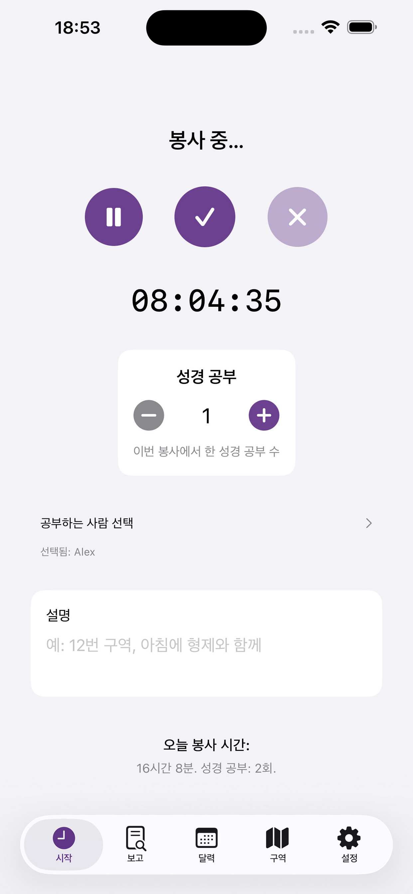
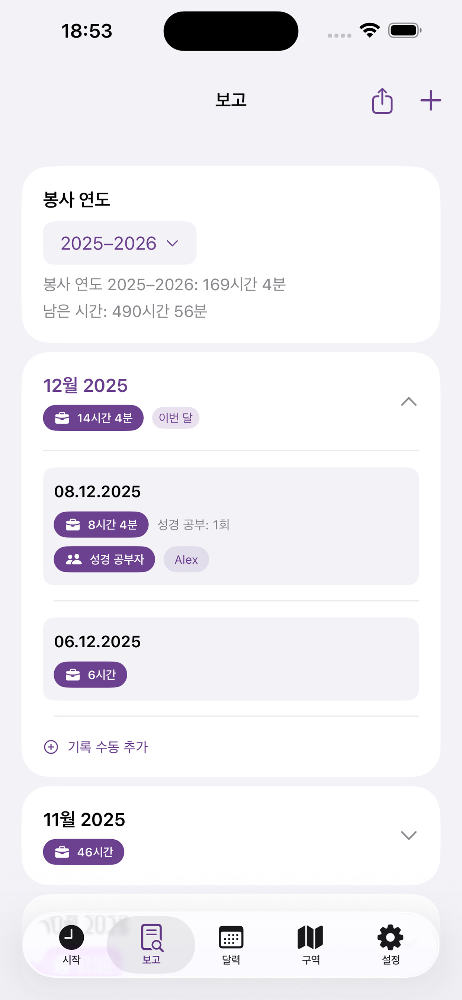

JW Ministry의 모든 화면 살펴보기
한국어 인터페이스의 실제 앱 화면입니다. 봉사 타이머, 성서 연구생 관리, 파이오니아 캘린더, 구역 카드 및 OLED 다크 모드를 확인해 보세요.
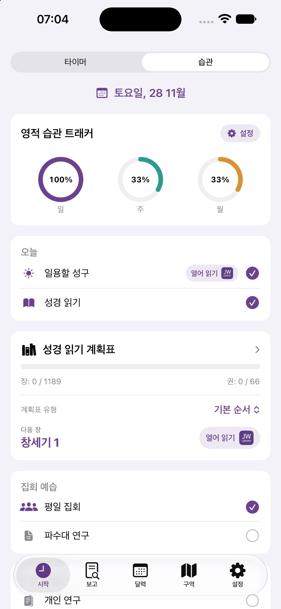
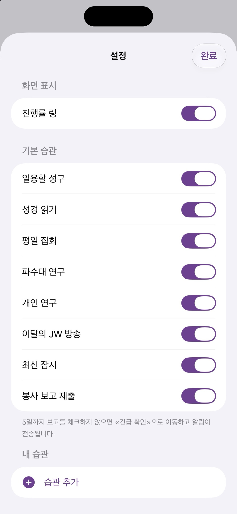
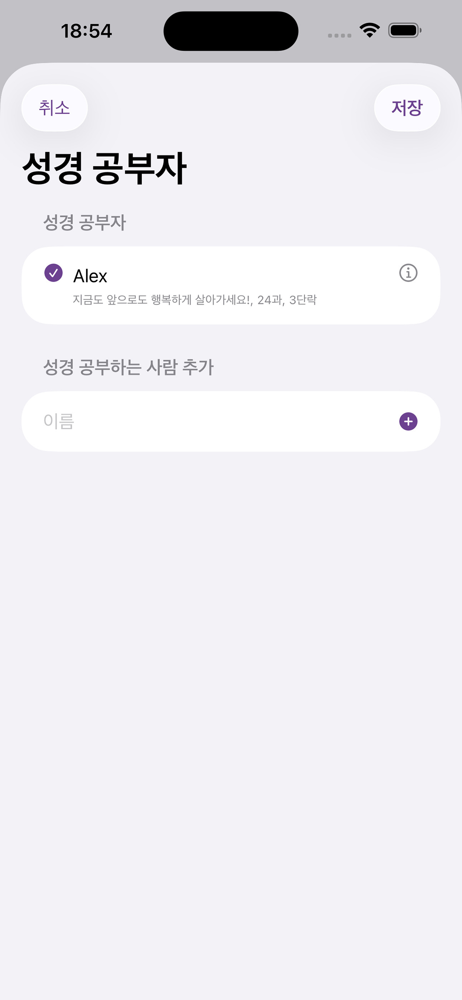
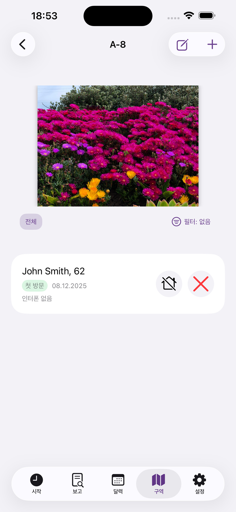
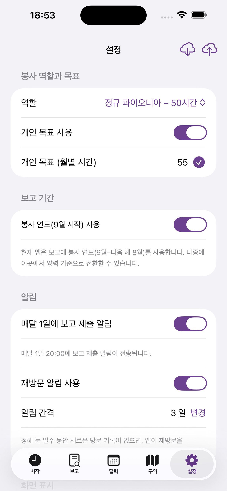
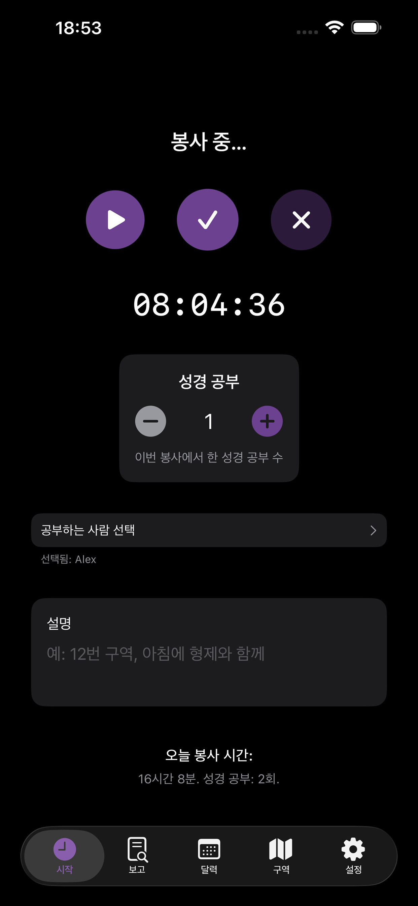
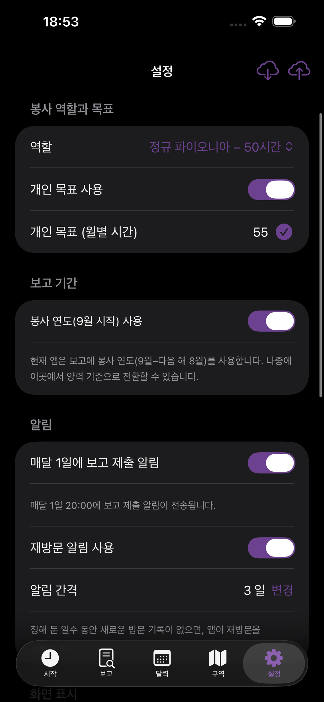


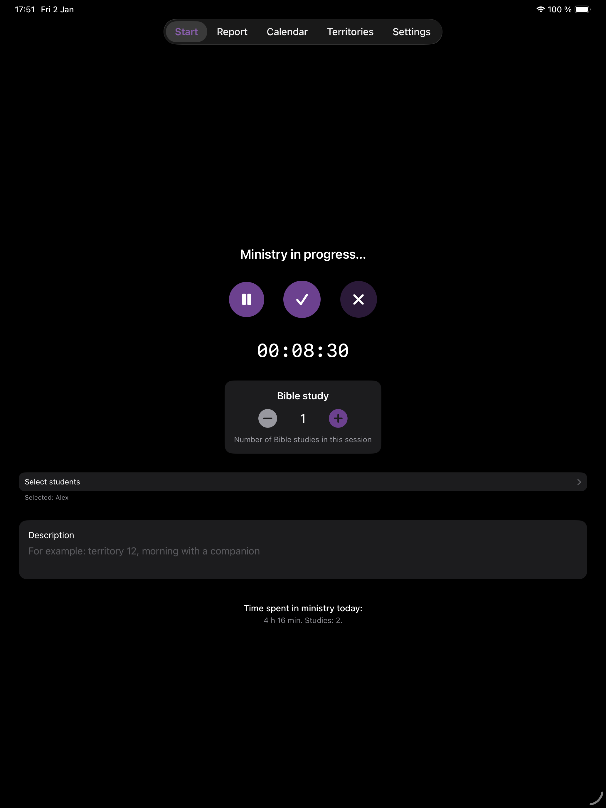


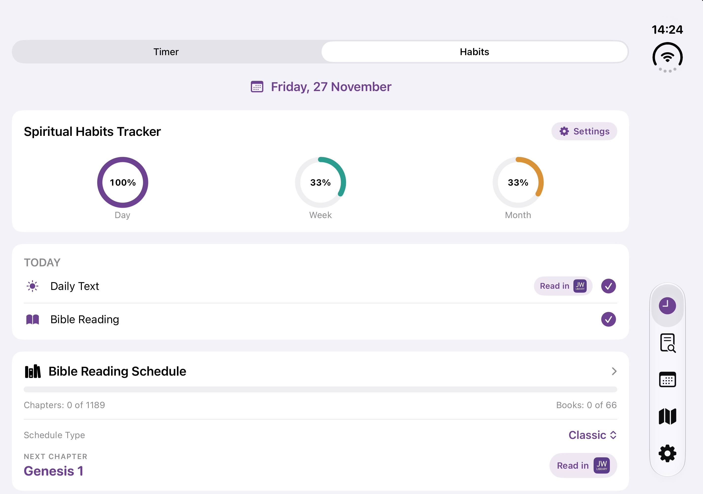
체계적인 야외 봉사를 위한 모든 도구
전도인, 보조 파이오니아, 정규 파이오니아 및 특별 파이오니아의 실제 봉사 환경에 맞춰 제작되었습니다.
스마트 타이머, 위젯 및 다이내믹 아일랜드
앱, 홈 화면 위젯 또는 잠금 화면에서 타이머를 시작하세요. 화면이 잠겨 있어도 다이내믹 아일랜드에서 실시간으로 봉사 시간을 확인할 수 있습니다.
성서 연구 및 교재 진도 관리
성서 연구를 일일 보고 기록에 바로 연결하세요. 연구생별로 ‘행복한 삶을 영원히 누리십시오!’ 등의 현재 과와 섹션을 기록할 수 있습니다.
모든 봉사 역할 및 개인 목표 시간 설정
전도인, 보조 파이오니아(15 또는 30시간), 정규 파이오니아(50시간), 특별 파이오니아(90 / 100시간) 및 맞춤형 개인 월별 목표 시간을 지원합니다.
봉사 연도(9월~8월) 및 파이오니아 캘린더
봉사 모임과 가족 숭배 일정을 계획하세요. 계획된 시간과 실제 봉사 시간을 비교하고, 스와이프 한 번으로 일정을 보고서 기록으로 전환할 수 있습니다.
구역 카드, 아파트 생성기 및 재방문 알림
구역 지도 사진 첨부, 10가지 색상 태그, 아파트 동·호수 자동 생성 기능을 제공합니다. 주소나 이름으로 빠르게 검색하고 재방문 알림을 받으세요.
100% 오프라인 개인정보 보호 및 iCloud 백업
회원가입이나 외부 서버 전송이 전혀 없습니다. 모든 기록과 구역 사진은 오직 사용자의 iPhone/iPad에만 저장되며 iCloud Drive로 간편하게 백업됩니다.
버전 2.0.1 새로운 기능
- 시작 탭에 '영적 습관' 트래커 추가: 일/주/월 진행률 링, 사용자 지정 습관, 가족 숭배 표시 옵션, 매월 5일 미제출 보고서 긴급 알림.
- 성경 읽기 계획표: 5가지 경로, 66권 장별 체크, 완독 예상 날짜, 'JW Library에서 읽기' 버튼.
- 캘린더 및 위젯 이중 목표: 파이오니아 기준 시간(30/50시간)과 개인 월간 목표를 이중 링으로 동시 표시.
- 폴더블 iPhone Duo 화면 및 iPadOS 레이아웃 완벽 최적화.
- 설정에 '앱 공유' 및 '공식 웹사이트' 링크 추가.
전도인과 파이오니아들이 JW Ministry를 선택하는 이유
야외 봉사 보고, 파이오니아 일정 관리 및 구역 기록 기능 비교입니다.
| 기능 | 종이 수첩 | 기존 구형 앱 | JW Ministry 2.0.1 |
|---|---|---|---|
| 잠금 화면 및 다이내믹 아일랜드 실시간 타이머 | 없음 | 없음 | 지원 (Live Activities) |
| 파이오니아 목표(15, 30, 50시간) 및 봉사 연도(600시간) 자동 계산 | 수동 계산 | 부분 지원 | 자동 계산 + 개인 목표 |
| 캘린더 ‘계획 vs 실제’ 비교 및 스와이프로 보고서 전환 | 없음 | 없음 | 원터치 전환 |
| 아파트 세대 자동 생성 + 구역 사진 및 10가지 색상 | 종이 구역 카드 | 텍스트만 가능 | 사진 카드 + 통합 검색 |
| 재방문 알림 및 매월 1일 20:00 보고서 제출 알림 | 없음 | 제한적 | 스마트 iOS 알림 |
| 100% 기기 내 보안 저장 및 사진을 포함한 iCloud 백업 | 분실 위험 | 기기 변경 시 오류 | 100% 오프라인 + 완벽 복원 |
| 최신 iOS, iPad, OLED 다크 모드 및 35개 이상 언어 지원 | — | 업데이트 중단 | 네이티브 SwiftUI 디자인 |
여호와의 증인의 야외 봉사와 파이오니아 봉사를 위한 맞춤 설계
JW Library와 함께 사용하여 봉사 연도 내내 전도인과 파이오니아의 봉사 일정을 체계적으로 관리하세요.
정규 및 특별 파이오니아 (월 50, 90, 100시간 / 봉사 연도 600시간)
9월부터 8월까지의 봉사 연도 동안 월 50시간 목표와 연간 600시간 진행률을 자동으로 계산합니다. 개인 월별 목표(예: 55시간)를 설정하고 캘린더에서 계획 시간과 실제 시간을 비교해 보세요.
- 월 50시간 및 봉사 연도 600시간 자동 합산 및 잔여 시간 계산
- 맞춤형 개인 월별 목표 시간(예: 55시간) 설정
- 계획된 시간과 실제 보고 시간을 비교하는 이중 진행 바
보조 파이오니아 (15 및 30시간) 및 회중 전도인
특별 활동월, 순회 감독자 방문 또는 기념식 철에 보조 파이오니아(15시간 또는 30시간)로 간편하게 전환하세요. 매월 1일 오후 8시 알림으로 야외 봉사 보고를 잊지 않고 제출할 수 있습니다.
- 15시간 및 30시간 보조 파이오니아 목표 원터치 전환
- 매월 1일 간편한 월별 봉사 보고서 공유
- 매월 1일 20:00 보고서 제출 알림
호별 방문 구역, 아파트 세대 생성 및 재방문 기록
구역 지도 사진을 첨부하고 아파트 동·층·호수를 한 번에 생성하세요. ‘첫 방문’, ‘부재중’, ‘거절’ 상태와 인터폰 번호 등 메모를 남기고 주소나 이름으로 즉시 검색할 수 있습니다.
- 아파트 동·층·호수 자동 생성기
- 구역 지도 사진, 10가지 색상 및 이름/주소 통합 검색
- 지정한 일수 경과 후 자동 재방문 알림
성서 연구생 진도 관리 및 구형 앱의 최신 대체재
연구생별로 ‘행복한 삶을 영원히 누리십시오!’ 교재의 과와 섹션을 기록하세요. ServicePlanner나 MyTime을 대체할 최신 iPhone 및 iPad용 네이티브 앱입니다.
- ‘행복한 삶을 영원히 누리십시오!’ 과 및 섹션 진도 기록
- 위젯, 다이내믹 아일랜드 및 OLED 다크 모드 완벽 지원
- ServicePlanner 및 MyTime을 대체하는 현대적인 iOS 앱
전도인 및 파이오니아 사용자 후기
매일 야외 봉사에서 JW Ministry를 사용하는 형제 자매들의 후기입니다.
“캘린더에서 이번 달 계획한 시간과 실제 봉사 시간을 한눈에 비교할 수 있어서 50시간 일정을 맞추기가 정말 편해졌습니다.”
“잠금 화면 실시간 타이머와 캘린더 일정을 스와이프해서 바로 보고서로 넘기는 기능이 최고예요. 광고도 없고 깔끔합니다.”
“아파트 호수 자동 생성 기능과 구역 내 이름 검색 덕분에 종이 수첩 없이도 부재중과 재방문을 완벽하게 관리하고 있습니다.”
35개 이상의 언어 완벽 지원
앱 인터페이스, 위젯 및 알림이 iPhone 또는 iPad의 시스템 언어에 맞춰 자동으로 표시됩니다:
JW Ministry 개발 후원하기
JW Ministry는 광고나 유료 결제 없이 무료로 제공됩니다. 이 앱이 봉사에 도움이 된다면 향후 iOS 업데이트와 Apple Developer 연간 라이선스 유지를 후원해 주실 수 있습니다:
암호화폐 직접 후원 (수수료 0%)
개발자 지갑으로 즉시 전송:
TQQxYhThQGngj887Lvq9TnKtyyYMcUDFNw

UQBNBroTUyMG0YqgiHGXwVKO_rKe5d2y7gXqvICREjBwuKYk

자주 묻는 질문 (FAQ)
JW Ministry를 JW Library 앱과 어떻게 함께 사용하나요?
공식 JW Library 앱으로 성경과 출판물을 읽고 집회 준비를 하는 동안, JW Ministry는 개인 야외 봉사 시간 측정, 파이오니아 일정 관리(15, 30, 50시간), 개인 구역 및 재방문 기록, 성서 연구생 진도 관리를 담당합니다.
봉사 보고와 구역 메모는 어디에 저장되나요?
오직 사용자의 iPhone 또는 iPad 내부에만 저장됩니다. 외부 서버로 어떠한 데이터도 전송되지 않으므로 개인 메모가 안전하게 보호됩니다.
새 iPhone으로 데이터를 옮기려면 어떻게 하나요?
‘설정’ 탭 오른쪽 위의 구름 업로드 아이콘을 눌러 iCloud Drive에 전체 백업 파일을 저장한 뒤, 새 기기에서 구름 다운로드 아이콘을 눌러 한 번에 복원할 수 있습니다.
봉사 중에 인터넷이 안 되어도 작동하나요?
네, 100% 오프라인으로 작동합니다. 모바일 데이터나 Wi-Fi 없이도 모든 기능을 사용할 수 있습니다.